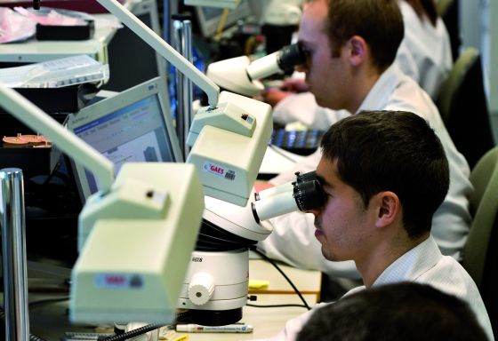
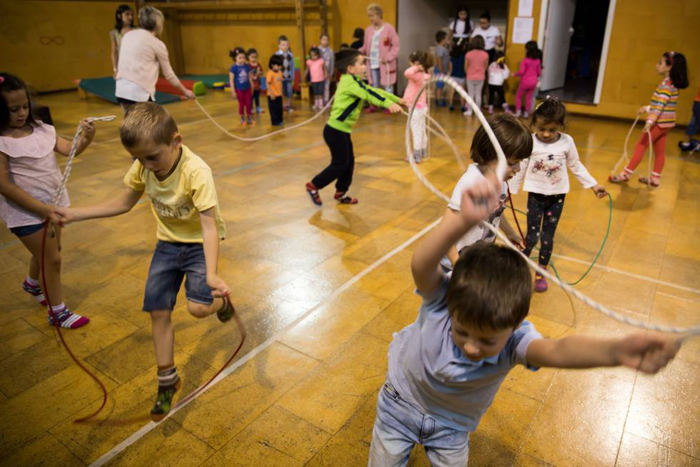

-
Educacion Primaria
Un lugar donde se enseñan y se transmiten valores, llegando a formar una comunidad de enseñanza-aprendizaje que podrá tener mucha influencia para llegar a transformar también la sociedad. -
Educacion Secundaria
Entre la primaria y la preparatoria se encuentra aquel limbo educativo que puede definir gran parte de la personalidad y los intereses de los adolescentes: la educación secundaria.

Presentando
Colegio One in the World
Nuestro colegio satisface los requisitos en materia de infraestructura, recursos humanos y clima operacional que garanticen la feliz permanencia del alumnado en sus instalaciones y que el proceso de aprendizaje se lleve a cabo sin carencias y con la menor cantidad de tropiezos posible.
Además, contamos con programas de becas o estímulos al estudiantado que hagan de la superación, el compromiso y el esfuerzo las directrices vitales de los estudiantes.
Cursos Generales
Comunicacion
Todos los niveles

Matematica
Todos los niveles

Personal Social
Todos los niveles

Ciencia y Tecnologia
Todas las edades

Fisica
Todos los niveles
Niveles de Educacion
Tenemos los 3 niveles de educacion basica
Primer Nivel
Nivel educacion Inicial
En este nivel se aplican técnicas pedagógicas de vanguardia que son el soporte de nuestro único Sistema Helicoidal. Estas técnicas favorecen al desarrollo armónico del niño y potencian su capacidad intelectual, emocional y espiritual.
Segundo Nivel
Nivel Educacion Primaria
Nuestros estudiantes logran el desarrollo progresivo de sus capacidades con base en técnicas de innovación permanente. Potenciamos el talento de una manera integral y desarrollamos competencias para que se desenvuelvan en entornos virtuales generados por las nuevas tecnologías.
Tercer Nivel
Nivel Educacion Secundaria
En este nivel contamos con un programa cimentado en nuestro Sistema Helicoidal, el cual sostiene que todo ser humano es capaz de interiorizar nuevos conocimientos, habilidades y destrezas, partiendo desde lo más simple hasta lo más complejo, de manera progresiva y en forma continua.